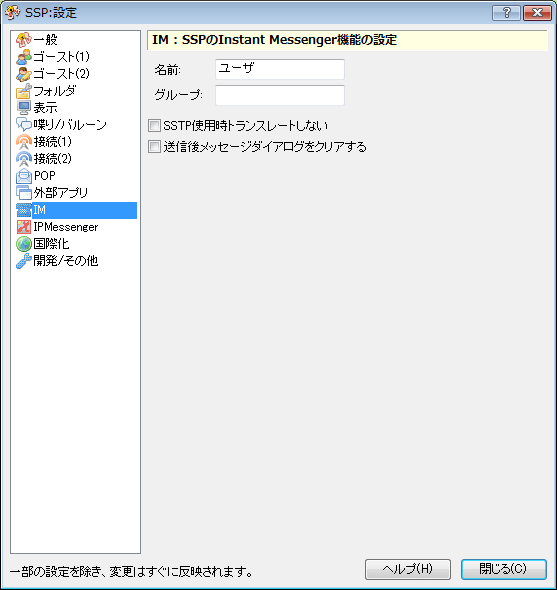

設定：IM
画像左側のリストをクリックで、それぞれのダイアログのページに対応する解説のページへ移動します。

このページでは右クリックメニューの「設定」サブメニューにある項目「本体設定」で開くダイアログの、「IM」ページについて解説しています。
SSP独自のSSTPかIP Messengerを使ったインスタントメッセンジャ機能の設定です。
各項目の解説
- 名前
- あなたのハンドル名等、インスタントメッセンジャで使用する名前を入力してください。
- グループ
- インスタントメッセンジャで利用するグループ名です。
- SSTP使用時トランスレートしない
- SSTP通信でSakuraScriptを送信する場合に、「トランスレート」と呼ばれるゴースト内部で文字を変換する機構を無視して、直接SakuraScriptを再生します。通常はチェックする必要はありません。
- 送信後メッセージダイアログをクリアする
- メッセージを送信後、メッセージ入力枠に入力した文字列を消去します。
下部のボタン
- ヘルプ
-
本体設定ダイアログの、設定中のページのヘルプ（つまりこのページ）を開きます。
ダイアログ右上の「？」マークも同様です。
- 閉じる
-
本体設定ダイアログを閉じます。
ダイアログ右上の「×」マークも同様です。